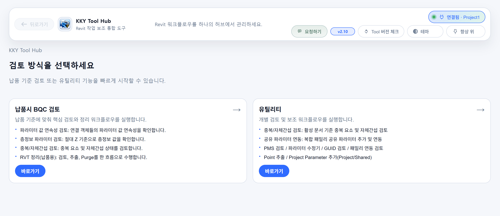

KKY Tools > Hub
리본에서 허브 버튼 하나로 진입하고, 허브 내부에서 모든 기능을 실행합니다.
이 문서는 KKY Tool Revit의 주요 기능을 사용자 관점에서 정리한 매뉴얼입니다. 메뉴 구조와 기능별 역할, 검토 요소, 수행 요소, 결과물을 중심으로 현재 제공 중인 기능을 확인할 수 있습니다.

리본에서 허브 버튼 하나로 진입하고, 허브 내부에서 모든 기능을 실행합니다.
HighTech 현장에서 납품 시 주요 항목을 검토하는 데 도움을 주는 기능으로 구성되어 있습니다.
평소 패밀리 관리, 파라미터 추가, 센트럴 파일의 건전성 관리에 도움을 주는 기능으로 구성되어 있습니다.
검색 결과가 없습니다. 다른 기능명이나 업무 키워드를 입력해 주세요.
HighTech 현장에서 납품 시 주요 항목을 검토하는 기능으로 구성되어 있는 메인 허브 그룹 중 하나입니다.
납품 시 정해진 검토 프로세스에 검토 정밀성 및 시간 절약에 도움을 주는 역할을 합니다.
중복 모델링이나 자체 간섭, 속성 누락, 속성 입력값 검토 및 납품 파일 정리 등
뷰 정리, 필터 적용, 파라미터 입력, 검토, 속성 추출, 불필요 항목 제거(Purge)까지 납품용 파일을 만들기 위한 정리 과정을 한 흐름으로 묶은 기능입니다.
납품용 RVT 산출물을 만들어내는 정리 워크플로우.
3D 뷰 상태, 링크/그룹/조립/설계 옵션, 필터 적용 상태, 추출 대상 속성.
정리된 RVT, 검토 엑셀, 로그, 불필요 항목 제거 결과표.
주의: RVT 직접 수정형 기능입니다. 작동 방식과 옵션 설정에 대한 설명을 상세 매뉴얼에서 필수로 확인해 주세요.
조건식에 맞는 객체만 골라 지정 속성과 좌표, 선형 정보를 엑셀로 추출하는 기능입니다.
납품 또는 검토에 필요한 객체 목록을 조건 기반으로 추려 속성 검토 자료를 만듭니다.
카테고리, 패밀리/타입, 파라미터 값, 좌표, 선형 정보 등 조건식에 포함된 대상 정보.
조건에 매칭된 객체와 지정 속성, 위치 정보를 정리한 엑셀 결과표.
연결된 객체끼리 지정 파라미터 값이 연속적으로 이어지는지, 허용 오차 내에서 연결 상태가 정상인지 검토합니다.
MEP 모델 요소의 파라미터 연속성 검토.
배관, 덕트, 전기 연결 계통의 객체 간 지정 파라미터 값의 불일치, 누락, 잘못된 연속성 검토.
객체 연결 여부, 불일치 목록, 추가 검토 파라미터 포함 결과 엑셀.
레벨의 절대 Z 좌표를 경계로 사용해 요소 위치를 판정하고, 층정보 파라미터 값이 기대값과 맞는지 확인합니다.
층 영역으로 구분되는 파라미터 값의 일치 여부를 검토합니다.
층정보 값 누락, 잘못된 층 표기, 경계층 인접 요소.
지정한 파라미터에 입력된 기대값과 실제로 입력된 값의 불일치 오류 목록.
기준 엑셀에 정의된 카테고리/패밀리/타입 조합과 프로젝트 내 객체 구성이 일치하는지 확인합니다.
프로젝트에서 사용된 패밀리와 타입이 납품 기준에 맞는지 빠르게 검토합니다.
카테고리, 패밀리 이름, 타입 이름 조합의 누락, 오사용, 기준표 미등록 항목.
기준 일치/불일치 목록과 검토 대상 객체 정보를 정리한 엑셀 결과표.
배관과 덕트의 중심축을 기준으로 탭 또는 분기 피팅의 축 방향이 어긋난 후보를 검토합니다.
분기 모델링 과정에서 발생할 수 있는 축 틀어짐과 접속 방향 오류를 찾아냅니다.
주 배관/덕트 중심선, 분기 피팅 방향, 접속 각도, 허용 오차를 벗어난 축 편차.
틀어짐 후보 객체와 기준축, 편차 정보를 정리한 검토 결과표.
중복 MEP 요소 그룹과 자체 간섭 후보를 한 화면에서 확인하고, 선택, 삭제, 복원, 엑셀 내보내기까지 수행합니다.
중복 요소와 자체 간섭을 탐지하여 중복 물량 산출 방지 및 모델링 오류를 잡아냅니다.
같은 위치의 중복 요소, 겹침/통과 등의 간섭 요소 검토. 공통 설정으로 검토 대상을 필터링할 수 있습니다.
중복 요소 및 간섭 요소를 그룹 및 쌍으로 정리하여 엑셀 출력. (중복의 경우 창에서 직접 확인 및 삭제/되돌리기 가능)
주의: 삭제/복원은 실제 모델 변경입니다. 검토자가 직접 수행하기보다 검토 결과를 추출하여 작업자에게 전달하는 편을 권장합니다.
기본 웍셋(Workset1) 또는 사용자가 입력한 특정 웍셋을 기준으로 객체가 올바른 웍셋에 배정되어 있는지 검토합니다.
납품 전 객체의 웍셋 배정 상태를 확인해 협업 모델 관리 기준을 맞춥니다.
객체별 웍셋 값, 기준 웍셋과 다른 항목, 기본 웍셋(Workset1) 잔류 항목 또는 지정 웍셋 누락.
웍셋 배정 오류 후보와 객체 식별 정보를 정리한 엑셀 결과표.
프로젝트에 추가된 프로젝트 파라미터 중 이름이 중복되거나 기준과 혼동될 수 있는 항목을 검토합니다.
동일하거나 유사한 이름의 프로젝트 파라미터로 인한 입력 오류와 집계 오류를 줄입니다.
프로젝트 파라미터 이름, 바인딩 카테고리, 인스턴스/타입 여부, 이름 중복 후보.
중복 파라미터 후보와 설정 정보를 정리한 검토 결과표.
공유 텍스트 파라미터가 필요한 객체에 누락 없이 들어가 있는지 확인하고, 예외 규칙을 적용해 검토합니다.
납품 기준에서 요구하는 텍스트 파라미터의 존재 여부와 입력 가능 상태를 점검합니다.
대상 카테고리, 공유 텍스트 파라미터 존재 여부, 예외 처리 대상, 누락 또는 잘못 바인딩된 항목.
파라미터 누락 객체와 예외 적용 결과를 정리한 엑셀 결과표.
평소 패밀리 관리, 파라미터 추가, 센트럴 파일의 건전성 관리에 도움을 주는 기능으로 구성되어 있는 메인 허브 그룹 중 하나입니다.
센트럴 파일 건전성(파라미터 GUID 일치 여부, 복합 패밀리 파라미터 연동 등)을 검토하는 데 도움을 줍니다.
프로젝트에 추가된 파라미터/공유 파라미터, 패밀리 파라미터, Segment와 PMS 간 OD/ID 일치 여부 등 프로젝트 설정 항목을 검토합니다.
중복 / 자체 간섭 검토는 BQC와 Utility 양쪽에서 사용하는 공통 검토 기능입니다.
복합 패밀리와 하위 패밀리에 필요한 공유 파라미터를 추가하고, 호스트와 하위 패밀리 간 연동까지 수행하는 기능입니다.
패밀리 표준화와 하위 패밀리 파라미터 건전성 유지 및 연동 확인.
동일 파라미터 추가 및 연동 수행 후 파라미터 추가 누락, GUID 일치 여부, 잘못된 연동 상태를 검토합니다.
추가/연동 수량, 연동 대상과 연동 여부 확인 후 엑셀로 결과 추출.
프로젝트 또는 공유 파라미터를 여러 RVT에 한 번에 추가하는 도구입니다.
여러 프로젝트 파일에 동시에 추가해야 하는 파라미터를 같은 카테고리와 설정으로 한 번에 추가합니다.
공유파라미터, 바인딩 카테고리(하위 카테고리 포함), 인스턴스/타입 여부 선택 후 해당 설정으로 파라미터 추가.
실행 로그, 성공/실패 결과 엑셀 추출.
필터 조건에 맞는 요소만 골라 파라미터 값을 일괄 수정하는 기능입니다.
필터에 해당하는 모든 모델 객체에 대해 지정한 파라미터에 입력값을 일괄 적용합니다.
한 번에 여러 RVT 파일을 선택해 값을 적용하고 저장합니다. Central File은 동기화하며 입력한 내용으로 코멘트를 남길 수 있습니다.
필터 조건에 맞는 객체 수, 실제 매칭 수, 수정된 객체 수 집계. 로그파일 엑셀 추출.
닫힌 RVT 파일의 Revit 링크 경로를 추출하고, 엑셀 기준으로 링크 경로를 다시 반영하는 기능입니다.
여러 프로젝트 파일의 링크 경로 현황을 한 번에 파악하고, 경로 변경 작업을 일괄 처리합니다.
RVT 파일 선택, 링크 파일 경로 추출, 엑셀 편집 기준의 경로 재지정, 저장 처리.
링크 경로 목록 엑셀, 변경 성공/실패 로그, 재지정 결과표.
주의: 경로 재지정은 RVT 링크 설정을 변경하는 작업입니다. 적용 전 기준 엑셀의 경로와 대상 파일을 확인해 주세요.
접수받은 KTA 양식을 하나의 시트 양식으로 모아 노즐코드 검토에 사용할 수 있게 정리합니다.
여러 형식으로 전달된 KTA 자료를 검토하기 쉬운 단일 양식으로 정리합니다.
KTA 원본 엑셀, 노즐코드 관련 컬럼, 병합 대상 시트, 표준 출력 양식.
단일 시트로 정리된 KTA 엑셀과 처리 로그.
Revit 세그먼트, 라우팅 기본설정(Routing Preference), 파이프 사이즈(Pipe Size)와 PMS 기준표를 비교해 매핑과 사이즈 일치 여부를 검토합니다.
초기 설정과 실제 배관 타입의 규격 검토.
재질 기반으로 Segment 후보, PMS 클래스 매핑, ND/ID/OD 비교
매핑표, Revit 사이즈표, PMS 사이즈 비교 및 오류 대상 엑셀 추출.
공유파라미터로 추가된 프로젝트/패밀리 파라미터의 GUID가 기준 TXT 파일과 일치하는지 확인하고, 정리 대상을 식별합니다.
프로젝트 및 패밀리 파일의 파라미터 건전성 검토.
프로젝트/패밀리 내 GUID 불일치, GUID가 다른 중복 파라미터, 삭제 또는 정리가 필요한 후보.
검토 결과에 따른 각종 오류 사항 엑셀 추출.
호스트 패밀리와 중첩 패밀리 간 공유 파라미터 연동 상태를 검토하고, 누락이나 GUID 불일치를 찾아냅니다.
복합 패밀리의 파라미터 연동 검수. 공유파라미터일 경우 GUID 비교.
파라미터 연동누락, 상위 패밀리와 파라미터 GUID 일치 여부
연동 오류, GUID 일치 여부 등의 이슈 사항을 엑셀로 추출합니다.
주의: 해당 기능은 복합 패밀리의 파라미터 연동 검토 기능입니다. 파라미터 추가 및 연동 수행 기능은 복합 패밀리 공유 파라미터 추가/연동 기능을 사용해 주세요.
프로젝트 기준점, 측량 기준점, 진북 값을 파일별로 추출합니다.
프로젝트 파일 좌표계 검토.
프로젝트 기준점, 측량 기준점, 진북 각도, 파일별 좌표 편차.
검토 결과를 엑셀로 추출합니다.
Revit 링크의 열려 있는 웍셋 현황을 점검하고, 필요한 경우 기본 웍셋(Workset1) 기준으로 적용합니다.
링크 모델을 열 때 불필요한 웍셋이 함께 열리는 상황을 줄이고 기본 링크 설정을 맞춥니다.
링크 인스턴스, 링크 타입, 열려 있는 웍셋 설정, 기본 웍셋(Workset1) 적용 여부.
링크별 열려 있는 웍셋 현황과 적용 결과를 정리한 엑셀 또는 로그.
주의: 적용 작업은 링크 로드 설정에 영향을 줄 수 있으므로 프로젝트 기준을 확인한 뒤 실행해 주세요.